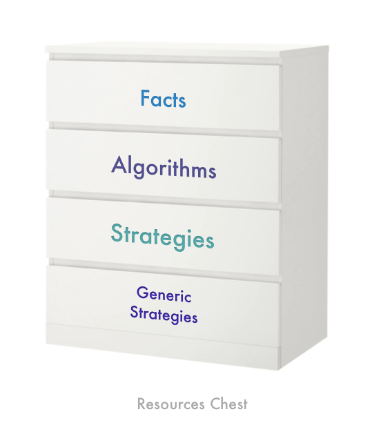
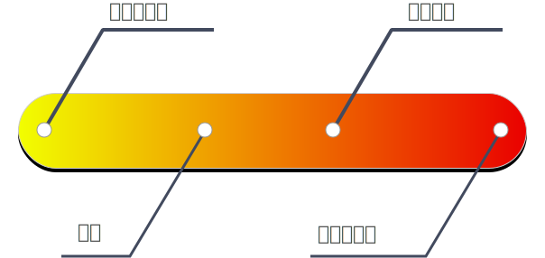

任何问题都可以看成一个由字符串组成的对象 p。解决问题的第一步就是对这个字符串进行parse，从而得到一些信号，signal，我们称之为 s_i，如何处理这些信号，设计一个恰当的路径进行破解，就是解决问题的过程。
我们对signal进行分解，我来了解它的解决问题的强健程度。如果可以解决的问题越程序性，其可以变化的参数就越少，也就半径越小，但是其可以被解决的概率是很大的。如果我们使用的越发通用的策略，那么他确实可以解决问题的半径增加了，但是他的强健程度也减弱了，所以，如果我们使用基于工具的策略，就是，一方面，它在特定问题的范畴之内，同时他又不那么通用，是我们可以解决问题的周边地区。
四个尽可能：尽可能暴露更多的信息；尽可能的转向那些工具多，信息多的地带；尽可能的暴露和构建工具；尽可能的往出现目标的方向构造，提高相似性
如果一个问题不能被事实或者程序性技术解决，那么就要交由更为高级的策略来解决，策略的问题在于，计算量的增加以及有所突破的概率在降低，只能是尝试，如果没等尝试就结束了，那么说明这个问题在触角范围之内。
如果一个问题非常的复杂，不给人些许的规律性的处理可能，那么就要调用低端的无目的的尝试，期许这个问题可以被解决。
之所以我们要弄懂解决问题的办法，就是为了缩减计算量，不断的提高目的性。
解决问题中一个非常重要的环节就是反思，去找一个更加简短的路径，一个可以通用的策略，增加自己的工具库，减少计算量，提高解决问题的效率。这些将在后面中展开并举例说明。